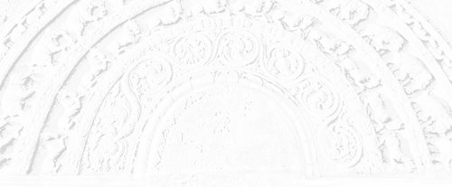

Sermon 30
Namo tassa bhagavato arahato sammāsambuddhassa
Namo tassa bhagavato arahato sammāsambuddhassa
Namo tassa bhagavato arahato sammāsambuddhassaEtaṁ santaṁ, etaṁ paṇītaṁ,
yadidaṁ sabbasaṅkhārasamatho sabbūpadhipaṭinissaggo
taṇhakkhayo virāgo nirodho nibbānaṁ.1“This is peaceful, this is excellent,
namely the stilling of all preparations, the relinquishment of all assets,
the destruction of craving, detachment, cessation, extinction.”
With the permission of the assembly of the venerable meditative monks. This is the thirtieth sermon in the series of sermons on Nibbāna.
In our previous sermon we discussed the way of liberating the mind from the grip of thoughts, which are comparable to the army of Māra by means of the gradual and systematic mode of practice based on the twin principles of pragmatism and relativity.
We also made an attempt to understand why the arahattaphalasamādhi of the arahant, who arrives at the non-prolific state by gradually attenuating cravings, conceits and views, comes to be called avitakkasamādhi, ‘thoughtless concentration’.
This avitakkasamādhi is the ‘noble silence’ in its highest sense. It is not the temporary subsidence of thinking and pondering as in tranquillity meditation. It goes deeper in that it routs the hosts of Māra at their very citadel, as it were, by penetrative wisdom.
The other day, with special reference to the Sakkapañhasutta in the Dīgha Nikāya, we outlined in brief a path of practice gradually tending towards the cessation of reckonings born of prolific perception. That discourse expounds a happiness, an unhappiness and an equanimity to be pursued, and a happiness, an unhappiness and an equanimity not to be pursued.
We get a clear enunciation of these two kinds of happiness, unhappiness and equanimity in the Saḷāyatanavibhaṅgasutta of the Majjhima Nikāya. In that discourse, the Buddha gives an exposition of thirty-six pathways of thought of beings under the heading chattiṁsa sattapadā, literally “thirty-six steps of beings”.2 They are listed as follows:
- Cha gehasitāni somanassāni,
“six kinds of happiness based on the household life” - Cha nekkhammasitāni somanassāni,
“six kinds of happiness based on renunciation” - Cha gehasitāni domanassāni,
“six kinds of unhappiness based on the household life” - Cha nekkhammasitāni domanassāni,
“six kinds of unhappiness based on renunciation” - Cha gehasitā upekkhā,
“six kinds of equanimity based on the household life” - Cha nekkhammasitā upekkhā,
“six kinds of equanimity based on renunciation”
The ‘six’ in each case refers to the six objects of sense, namely form, sound, smell, taste, tangible and idea, rūpa, sadda, gandha, rasa, phoṭṭhabba, dhamma. Now in order to acquaint ourselves with the six kinds of happiness based on the household life, let us try to understand the definition of the first kind, that is to say ‘form’, as the object of the eye.
Cakkhuviññeyyānaṁ rūpānaṁ iṭṭhānaṁ kantānaṁ manāpānaṁ manoramānaṁ lokāmisapaṭisaṁyuttānaṁ paṭilābhaṁ vā paṭilabhato samanupassato pubbe vā paṭiladdhapubbaṁ atītaṁ niruddhaṁ vipariṇataṁ samanussarato uppajjati somanassaṁ, yaṁ evarūpaṁ somanassaṁ, idaṁ vuccati gehasitaṁ somanassaṁ.
When one regards as an acquisition an acquisition of forms, cognizable by the eye, that are desirable, charming, agreeable, delightful, connected with worldly gains, or when one recalls what was formerly acquired that has passed, ceased and changed, happiness arises. Such happiness as this is called happiness based on the household life.
The happiness based on renunciation is defined as follows:
Rūpānaṁ tveva aniccataṁ viditvā vipariṇāmavirāganirodhaṁ: ’Pubbe c’eva rūpā etarahi ca sabbe te rūpā aniccā dukkhā vipariṇāmadhammā’ti, evaṁ etaṁ yathābhūtaṁ samappaññāya passato uppajjati somanassaṁ, yaṁ evarūpaṁ somanassaṁ, idaṁ vuccati nekkhammasitaṁ somanassaṁ.
When by knowing the impermanence, change, fading away and cessation of forms one sees as it actually is with right wisdom that forms both formerly and now are all impermanent, suffering and subject to change, happiness arises. Such happiness as this is called happiness based on renunciation.
Then the unhappiness based on the household life is explained in the following words:
Cakkhuviññeyyānaṁ rūpānaṁ iṭṭhānaṁ kantānaṁ manāpānaṁ manoramānaṁ lokāmisapaṭisaṁyuttānaṁ appaṭilābhaṁ vā appaṭilabhato samanupassato pubbe vā appaṭiladdhapubbaṁ atītaṁ niruddhaṁ vipariṇataṁ samanussarato uppajjati domanassaṁ, yaṁ evarūpaṁ domanassaṁ, idaṁ vuccati gehasitaṁ domanassaṁ.
When one regards as a non-acquisition the non-acquisition of forms cognizable by the eye that are desirable, charming, agreeable, delightful, connected with worldly gains, or when one recalls what was formerly not acquired that has passed, ceased and changed, unhappiness arises. Such unhappiness as this is called unhappiness based on the household life.
The description of unhappiness based on renunciation has a special significance to insight meditation. It runs:
Rūpānaṁ tveva aniccataṁ viditvā vipariṇāmavirāganirodhaṁ: ’Pubbe c’eva rūpā etarahi ca sabbe te rūpā aniccā dukkhā vipariṇāmadhammā’ti, evaṁ etaṁ yathābhūtaṁ samappaññāya disvā anuttaresu vimokhesu pihaṁ upaṭṭhāpeti: ’kadā’ssu nām’ahaṁ tad āyatanaṁ upasampajja viharissāmi yad ariyā etarahi āyatanaṁ upasampajja viharantī’ti, iti anuttaresu vimokhesu pihaṁ uppaṭṭhāpayato uppajjati pihapaccayā domanassaṁ, yaṁ evarūpaṁ domanassaṁ, idaṁ vuccati nekkhammasitaṁ domanassaṁ.
When by knowing the impermanence, change, fading away and cessation of forms one sees as it actually is with right wisdom that forms both formerly and now are all impermanent, suffering and subject to change, one arouses a longing for the supreme deliverances thus: “When shall I enter upon and abide in that sphere that the Noble Ones now enter upon and abide in?” In one who arouses such a longing for the supreme deliverances unhappiness arises conditioned by that longing. Such unhappiness as this is called unhappiness based on renunciation.
The description of unhappiness based on renunciation brings up some important terms worth discussing. Anuttaresu vimokhesu is a reference to the three supreme deliverances known as animitta, the ‘signless’, appaṇihita, the ‘undirected’, and suññata, the ‘void’.
The reference to an āyatana, ‘sphere’, in this passage is particularly noteworthy. The sphere that the Noble Ones enter on and abide in is none other than the sphere alluded to in the famous sutta on Nibbāna in the Udāna, beginning with
atthi, bhikkhave, tad āyatanaṁ, yattha n’eva paṭhavī na āpo3 etc.,
“Monks, there is that sphere in which there is neither earth nor water” etc.
We have pointed out that it is a reference to the cessation of the six sense-spheres as a realization.4 So the sphere that the Noble Ones enter on and abide in is the very cessation of the six sense-spheres.
In the same sutta passage in the Udāna, we came across the three terms appatiṭṭhaṁ, appavattaṁ and anārammaṇaṁ, the ‘unestablished’, the ‘non continuing’ and the ‘objectless’, which we identified as allusions to the three deliverances.
The word pihā (Sanskrit spṛhā, ‘longing’, ‘desire’), occurring in this context, shows that there need not be any hesitation in using words implying desire in connection with Nibbāna. It is true that such a desire or longing for Nibbāna makes one unhappy. But that unhappiness is preferable to the unhappiness based on the household life. That is why it is upgraded here as unhappiness based on renunciation.
So far we have quoted instances of the six kinds of happiness based on the household life, cha gehasitāni somanassāni; the six kinds of happiness based on renunciation, cha nekkhammasitāni somanassāni; the six kinds of unhappiness based on the household life, cha gehasitāni domanassāni; and the six kinds of unhappiness based on renunciation, cha nekkhammasitāni domanassāni.
The ‘six’ in each case refers to the objects of the six senses. Now lets us take up a paradigm to understand the six kinds of equanimity based on the household life, cha gehasitā upekkhā.
Cakkhunā rūpaṁ disvā uppajjati upekkhā bālassa mūḷhassa puthujjanassa anodhijinassa avipākajinassa anādīnavadassāvino assutavato puthujjanassa, yā evarūpā upekkhā rūpaṁ sā nātivattati, tasmā sā ’upekkhā gehasitā’ti vuccati.
On seeing a form with the eye, equanimity arises in a foolish infatuated worldling, in an untaught worldling who has not conquered his limitations, who has not conquered the results [of kamma], and who is not aware of danger, such equanimity as this does not transcend form, that is why it is called equanimity based on the household life.
The equanimity of a worldling, untaught in the Dhamma, who has not conquered limitations and defilements, and who has not conquered the results of kamma, is incapable of transcending form. His equanimity is accompanied by ignorance.
Then comes the description of equanimity based on renunciation, nekkhammasitā upekkhā.
Rūpānaṁ tveva aniccataṁ viditvā vipariṇāmavirāganirodhaṁ: ’Pubbe c’eva rūpā etarahi ca sabbe te rūpā aniccā dukkhā vipariṇāmadhammā’ti, evaṁ etaṁ yathābhūtaṁ samappaññāya passato uppajjati upekkhā, yā evarūpā upekkhā rūpaṁ sā ativattati, tasmā sā ’upekkhā nekkhammasitā’ti vuccati.
When by knowing the impermanence, change, fading away and cessation of forms one sees as it actually is with right wisdom that forms both formerly and now are all impermanent, suffering and subject to change, equanimity arises. Such equanimity as this transcends form, that is why it is called ‘equanimity based on renunciation’.
The same kind of reflection on impermanence upon occasion gives rise to happiness, unhappiness and equanimity, according to the attitude taken up. Unlike the equanimity born of ignorance, this equanimity, born of right wisdom, transcends form. That is why it is called equanimity based on renunciation.
The Buddha speaks about all the thirty-six objects of sense, out of which we brought up, as a paradigm, the illustration given about the visual object, form.
These thirty-six are called the thirty-six pathways of beings, chattiṁsa sattapadā, in the sense that they depict the thought patterns of beings. In this discourse, the Buddha proclaims the basic maxim he employs in gradually channelling the thought processes of beings towards Nibbāna along these thirty-six pathways. The maxim is summed up in the following words:
tatra idaṁ nissāya idam pajahatha,
therein, depending on this, abandon this.
This maxim has some affinity to the paṭicca samuppāda formula “this being, this arises”. In fact, this is a practical application of the same formula. In the context of the path of practice, the dependence on one thing is for the purpose of abandoning another. There is an attitude of detachment in this course of practice. Based on this maxim, the Buddha outlines the way in which he guides one towards Nibbāna in four stages. The first stage in that gradual path towards Nibbāna is described as follows:
Tatra, bhikkhave, yāni cha nekkhammasitāni somanassāni tāni nissāya tāni āgamma, yāni cha gehasitāni somanassāni tāni pajahatha tāni samatikkamatha, evam etesaṁ pahānaṁ hoti, evam etesaṁ samatikkamo hoti.
Therein, monks, by depending on and relying on the six kinds of happiness based on renunciation, abandon and transcend the six kinds of happiness based on the household life, that is how they are abandoned, that is how they are transcended.
In the same way, by depending on the six kinds of unhappiness based on renunciation, the six kinds of unhappiness based on the household life are abandoned. Also, by depending on the six kinds of equanimity based on renunciation, the six kinds of equanimity based on the household life are abandoned.
So at the end of the first stage, what are we left with? All what is based on the household life is left behind, and only the six kinds of happiness based on renunciation, the six kinds of unhappiness based on renunciation and the six kinds of equanimity based on renunciation remain. That is the position at the end of the first stage.
Then, in the second stage, a subtler and more refined level of experience is aimed at. Out of the three types of mental states based on renunciation, firstly, the six kinds of unhappiness based on renunciation are abandoned by the six kinds of happiness based on renunciation. Then the six kinds of happiness based on renunciation are abandoned by the six kinds of equanimity based on renunciation.
To the extent that all the above three mental states are based on renunciation, they are of a piece with each other. Also, it is the same mode of insightful reflection that gives rise to them.
However, as attitudes, happiness is subtler and more excellent than unhappiness, and equanimity is subtler and more excellent than happiness, since it is nearer to wisdom. So in the second stage we see a gradual procedure arriving at a subtler and more excellent state even in the case of those three mental states based on renunciation. By the end of the second stage, only equanimity based on renunciation remains.
Now comes the third stage. Here the Buddha points out that in the case of equanimity there can be two varieties.
Atthi, bhikkhave, upekkhā nānattā nānattasitā, atthi, bhikkhave, upekkhā ekattā ekattasitā.
There is, monks, an equanimity that is diversified, based on diversity, and there is an equanimity that is unified, based on unity.
What is that equanimity that is diversified? It is defined as the equanimity regarding the objects of the five external senses, that is to say, equanimity regarding forms, sounds, smells, flavours and tangibles.
Equanimity that is unified is defined with reference to the immaterial realms, namely the sphere of infinity of space, the sphere of infinity of consciousness, the sphere of nothingness and the sphere of neither-perception-nor-non-perception.
Now in the case of these two types of equanimity, the Buddha points out a way of abandoning the equanimity based on diversity with the help of the equanimity based on unity. As equanimity both types are commendable, but that which is diversified and based on diversity is grosser. Equanimity that is unified and based on unity is subtler and more excellent. So the equanimity based on diversity is abandoned and transcended by the equanimity that is unified, based on unity. This is the end of the third stage.
In the fourth stage, we are left with only that equanimity that is based on unity. It is experienced in the higher rungs of meditation. But here, too, the Buddha advocates a prudent course of action. In fact, it is here that the deepest practical hint is given.
Atammayataṁ, bhikkhave, nissāya atammayataṁ āgamma, yāyam upekkhā ekattā ekattasitā, taṁ pajahatha taṁ samatikkamatha, evam etissā pahānaṁ hoti, evam etissā samatikkamo hoti.
Monks, by depending and relying on non-identification abandon and transcend equanimity that is unified, based on unity; that is how it is abandoned, that is how it is transcended.
Atammayatā is a term we have already discussed at length in our earlier sermons.5 Its importance has not been sufficiently recognized in our tradition. As we pointed out, the word tammayo, literally ‘of thatness’, could be explained with reference to such usages as suvaṇṇamaya and rajatamaya, ‘golden’ and ‘silver’. How does this ‘of thatness’ come by?
If, for instance, one who has attained the infinity of space as a meditative experience identifies himself with it, with the conceit eso ’ham asmi, ‘this am I’, there is that tammayatā coming in. It is a subtle grasping, or in other words a me-thinking, maññanā – imagining oneself to be one with that experience. So the Buddha’s advice is to abandon and transcend even that equanimity based on unity by resorting to the maxim of atammayatā, non-identification.
The subtle conceit ‘am’, asmi, is that trace of grasping with which one tries to sit pretty on that which is impermanent and changing. It is the most fundamental assertion of existence.
In the Sappurisasutta of the Majjhima Nikāya we get a good illustration of the application of this principle of detachment, made known by the Buddha.
Sappuriso ca kho, bhikkhave, iti paṭisañcikkhati:
Nevasaññānāsaññāyatanasamāpattiyā pi kho atammayatā vuttā Bhagavatā, ’yena yena hi maññanti tato taṁ hoti aññathā’ti.
So atammayataṁ yeva antaraṁ karitvā tāya nevasaññānāsaññāyatanasamāpattiyā n’eva attān’ukkaṁseti na paraṁ vambheti. Ayam pi, bhikkhave, sappurisadhammo.6
But a good man, monks, considers thus:
“Non-identification even with the attainment of the sphere of neither-perception-nor-non-perception has been declared by the Fortunate One [in such terms as]: ‘In whatever way they imagine, thereby it turns otherwise’.”
So he takes into account that very non-identification and neither exalts himself nor disparages others because of his attainment of the sphere of neither-perception-nor-non-perception. This, too, monks, is the nature of a good man.
In the Sappurisasutta, the Buddha expounds the characteristics of a ‘good man’. In this context, the term sappurisa, ‘good man’, is used exclusively to represent a noble disciple, ariyasāvaka. A noble disciple does not look upon his jhānic attainments in the same way as an ordinary meditator attaining jhānas. His point of view is different.
This discourse explains his view point. A good man reflects wisely according to the advice given by the Buddha to the effect that even to the higher jhānic attainment of neither-perception-nor-non-perception the principle of non-identification must be applied, recalling the maxim made known by the Buddha:
Yena yena hi maññanti tato taṁ hoti aññatha,
in whatever way they imagine, thereby it turns otherwise.
This is a maxim we had discussed earlier too.7
Maññanā is egoistic imagining. When one thinks in egoistic terms about something, by that very me-thinking it turns otherwise. Due to egoistic imagining, it becomes a thing, and once it becomes a thing, it is bound to change and become another.
The good man calls to mind that maxim, that norm, and refrains from exalting himself and disparaging others on account of his attainment. He does not identify himself with it. From this it becomes clear that atammayatā or non-identification is the path to Nibbāna.
So the Buddha gradually channelizes the pathways of thoughts of beings from the grosser to subtler levels and finally tops up by directing them to Nibbāna through non-identification, atammayatā. Non-identification is the watchword for clinging-free parinibbāna.
The dictum tatra idaṁ nissāya idam pajahatha, “therein, depending on this, abandon this”, which the Buddha expounds in the Saḷāyatanavibhaṅgasutta, portrays a duality between attention, manasikāra, and inattention, amanasikāra.
That is to say, the basic principle in this dictum is the method of encouraging inattention to grosser things by recommending a way of attending to subtler things. So it seems both attention and inattention are given an importance in this procedure.
In order to eliminate one thing by inattention, attention to some other thing is recommended. For the purpose of inattention to something gross, attention to something subtle is taken up. But that is not the end of it. Even that is expelled with the help of something subtler. Here we have a wonderful technique, based on the twin principles of pragmatism and relativity.
These two terms comprehend the entire gamut of the path of practice in Buddhism. ‘Pragmatic’ means ‘for some practical purpose’, ‘relative’ means ‘in relation to something else’, that is, as a means to an end, and not absolutely as an end in itself. So in this system of practice everything has a pragmatic and a relative value.
The question of attention and inattention has also to be understood in that background. A clear illustration of the method of elimination of grosser mental states with the help of subtler mental states by attention and inattention comes in the Vitakkasaṇṭhānasutta of the Majjhima Nikāya. There the Buddha explains this method making use of a simile of a carpenter.
Seyyathā pi, bhikkhave, dakkho palagaṇḍo vā palagaṇḍantevāsī vā sukhumāya āṇiyā oḷārikaṁ āṇiṁ abhinīhaneyya abhinīhareyya abhinivajjeyya, evam eva kho, bhikkhave, bhikkhuno yaṁ nimittam āgamma yaṁ nimittaṁ manasikaroto uppajjanti pāpakā akusalā vitakkā chandūpasaṁhitā pi dosūpasaṁhitā pi mohūpasaṁhitā pi, tena, bhikkhave, bhikkhunā tamhā nimittā aññaṁ nimittaṁ manasikātabbaṁ kusalūpasaṁhitaṁ.8
Just as, monks, a skilled carpenter or his apprentice might knock out, draw out and remove a coarse peg by means of a fine one, even so, monks, when a monk [finds that], due to some sign, by attending to some sign, there arise in him evil unskilful thoughts connected with desire, with hate and with delusion, that monk, monks, should attend to some other sign in its stead, one that has to do with the skilful.
Now let us try to understand the point of this simile. When, for instance, a carpenter, in fitting out a door, finds that he is driving a blunt nail, he extracts it with the help of a sharper one. He takes up the sharper nail just for the purpose of extracting the blunt nail. So also one resorts to a skilful thought to expel the unskilful thought as a means to an end. This kind of pragmatic and relative approach avoids tenacious grasping and dogmatic involvement.
The spirit of the law of dependent arising runs through the entire course of Buddhist practice, culminating in atammayatā, non-identification.
The two terms kusala and akusala also deserve our special attention in this context. The basic meaning of kusala is ‘skilful’, and akusala means ‘unskilful’.
Here, again, we have something relative. ‘Skilful’ presupposes ‘unskilful’ and gets a value in relation to the latter. It has no absolute value. We make use of the skilful in order to push away the unskilful. That done, there is no further involvement with it, as one’s last resort is atammayatā, non-identification. That is why there is no problem of a clogging coming in.
Our discussion of the Saḷāyatanavibhaṅgasutta brings to light another unique feature of this Dhamma. In other religious systems the question of reality is resolved by having recourse to unity. Oneness is supposed to be the ultimate goal.
In our analysis of the saṁsāric problem, we often referred to a duality or a dichotomy. Everywhere we were confronted with a duality. But to grasp the two as one, in some form of oneness, is not the way out. Instead we have here, as the final solution, atammayatā or non-identification, a clinging-free approach in the last analysis.
It is in the nature of saṁsāric existence that beings find themselves bound and fettered. These fetters are called saṁyojanāni. A binding or a fetter implies ‘two’, as when two bulls are tied together.9
The term upādāna is also used quite often. It implies a holding on to something. There, too, the notion of a duality comes in – one who holds and the thing held. It is not at all easy to transcend this duality, characteristic of saṁsāric existence. This is the crux of the whole problem. Unity or oneness is not the solution, it has to be solved with extreme judiciousness.
In the very first discourse of the Saṁyutta Nikāya we get a solution to the problem, briefly stated. The discourse is called Oghataraṇasutta, “Crossing the Flood”, and it was given pride of place probably because of its importance.
A deity comes and asks the Buddha:
Kathaṁ nu tvaṁ mārisa ogham atari?10
How did you, Sir, cross the flood?
And the Buddha answers:
Appatiṭṭhaṁ khvāham, āvuso, anāyūhaṁ ogham atariṁ.
Without tarrying, friend, and without hurrying, did I cross the flood.
But the deity, finding the answer too enigmatic, asks:
Yathā kathaṁ pana tvaṁ mārisa appatiṭṭham anāyūham ogham atari?
But how [exactly is it], sir, that you crossed the flood without tarrying and without hurrying?
Then the Buddha makes an explanatory statement:
Yadā svāham, āvuso, santiṭṭhāmi tadāssu saṁsīdāmi, yadā svāham āvuso āyūhāmi tadāssu nibbuyhāmi. Evam khvāham, āvuso, appatiṭṭhaṁ anāyūhaṁ ogham atariṁ.
When I, friend, tarried, I found myself sinking; when I, friend, hurried, I got swept away. And so, friend, without tarrying and without hurrying did I cross the flood.
Then the deity, being pleased, uttered the following verse in approbation:
Cirassaṁ vata passāmi,
brāhmaṇaṁ parinibbutaṁ,
appatiṭṭhaṁ anāyūhaṁ,
tiṇṇaṁ loke visattikaṁ.O, what length of time since I beheld,
A saint with all his passions quelled,
Who neither tarrying nor yet hurrying,
Has crossed the world’s viscosity – ‘craving’.
This discourse on crossing the flood reveals some salient features of the middle path. If a person caught up in a water current tries to stay still, he will sink. If he simply struggles to escape, he will get swept away. So like a good swimmer, he has to avoid both extremes, and, by means of a mindful and systematic gradual effort, work out his freedom. In other words, he has to strive – not struggle.
So we can understand why the Buddha in his very first sermon, Dhammacakkapavattanasutta, “Discourse on the Turning of the Wheel of Dhamma”, proclaimed as the middle path the noble eightfold path, avoiding both extremes of attachment to sensuality, kāmasukhallikānuyoga, and self-mortification, attakilamathānuyoga.11 Here, too, the implication is that the entire round of existence is a water current to be crossed over by means of a systematic and gradual effort.
In some of our earlier sermons, while analyzing the law of dependent arising, we made use of the simile of the vortex for easy comprehension.12 Now if we are to take it up again, we may say that it is in the nature of beings in saṁsāra to get drifted by the current of preparations, saṇkhārā, owing to ignorance, avijjā, and go on revolving between consciousness, viññāṇa, and name-and-form, nāma-rūpa.
This ignorance in the form of the four pervert perceptions – namely the perception of permanence in the impermanent, the perception of pleasure in the painful, the perception of beauty in the repulsive, and the perception of self in the not-self – gives rise to the run-away current of water which keeps running round and round between consciousness and name-and-form. This is the saṁsāric vortex, saṁsāravaṭṭa.
Now, for instance, if we throw even a small leaf to a spot where there is a vortex, it also keeps revolving. Similarly, all over this saṁsāric existence duality holds sway. Therefore, freedom from it can be won only by a subtle form of striving. That is why the Buddha used the two terms appatiṭṭhaṁ and anāyūhaṁ. Avoiding the two extremes of stagnation and struggling, one has to cross the flood going the middle way.
When the Buddha proclaimed that freedom can be won only by the middle way, avoiding both extremes, the extremist philosophers of his day criticized and disparaged him, saying: “Then you are preaching a doctrine of bewilderment”.
We find such an instance of accusation in the Māgandiyasutta of the Aṭṭhaka Vagga of the Sutta Nipāta. The Brāhmin Māgandiya poses the following question to the Buddha:
’Ajjhattasantī’ti yam etam atthaṁ,
kathan nu dhīrehi paveditaṁ taṁ.13That which they call ‘inward peace’,
In what terms have the wise proclaimed that [peace]?
The Buddha’s answer took the following form:
Na diṭṭhiyā na sutiyā na ñāṇena,
sīlabbatenāpi visuddhim āhu,
adiṭṭhiyā assutiyā aññāṇā
asīlatā abbatā no pi tena,
ete ca nissajja anuggahāya
santo anissāya bhavaṁ na jappe.Not by views, nor by learning,
nor by knowledge,
Nor yet by virtue and holy vows,
they say, can purity come,
Neither can it come by without views,
learning and knowledge,
Without virtue and holy vows,
Letting go of them all and grasping not one,
That peaceful one, leaning on none,
Would hanker no more for existence.
At this reply the Brāhmin Māgandiya was puzzled and accuses the Buddha of prevarication.
No ce kira diṭṭhiyā na sutiyā na ñāṇena,
sīlabbatenāpi visuddhim āha,
adiṭṭhiyā assutiyā aññāṇā
asīlatā abbatā no pi tena,
maññe-m-ahaṁ momuham eva dhammaṁ,
diṭṭhiyā eke paccenti suddhiṁ.If not by views, nor by learning,
nor by knowledge,
Nor yet by virtue and holy vows
can purity be won,
If it comes not without views,
learning and knowledge,
Without virtue and holy vows – well then
Bewilderment itself, I think, is this Dhamma,
For there are some who claim purity by views.
Now these two verses call for some comments. Firstly there is a minor problem about variant readings. In both these verses, we followed the reading visuddhi, whereas some editions accept the reading na suddhim āha, where the negative seems superfluous. Visuddhi seems more meaningful here.
The commentarial explanation of these two verses seems to go off at a tangent.14 It says that the negatives in the first two lines of the Buddha’s reply refer to wrong views, wrong learning, wrong knowledge, wrong virtue and wrong vows, and that the third and fourth lines refer to right view, right learning, right knowledge, right virtue and right vows. In other words, it is only a question of wrong view, micchā diṭṭhi, and right view, sammā diṭṭhi.
This interpretation misses the subtle point at issue in this dialogue. If it is as simple as that, there is no ground for Māgandiya’s accusation. Other religious teachers, who disputed with each other, used to assert that purity is attained only by their views, learning, knowledge, virtue and vows.
Here then it is not a question of difference between micchā diṭṭhi and sammā diṭṭhi. Here is something more radical concerning sammā diṭṭhi itself.
According to this enlightened approach, views etc. cannot totally be dispensed with, nor are they to be grasped. We come back now to the two key words ‘pragmatic’ and ‘relative’. That is why the Buddha declared that purity cannot be attained by views, learning, knowledge, virtue and vows, nor in the absence of these qualities.
This is an apparently contradictory statement which, however, puts in a nutshell the essence of the middle path. The inward peace, mentioned in the above context, is nothing other than the clinging-free perfect extinction, anupādā parinibbāna. That becomes clear by the last three lines of the Buddha’s reply,
ete ca nissajja anuggahāya
santo anissāya bhavaṁ na jappe.Letting go of them all and grasping not one,
That peaceful one, leaning on none,
Would hanker no more for existence.
We came across the word anissita in our discussions about Nibbāna, for instance in the cryptic formula
nissitassa calitaṁ, anissitassa calitaṁ natthi,15
to the one attached there is wavering, to the unattached one, there is no wavering.
Being unattached, there is no hankering for existence. Where there is grasping, there is existence.
We may revert to our simile of sharpening a razor.16 The constituents of the path have to be taken up as one takes up a razor for sharpening, ready to let go. Once the purpose is served, they have to be given up. That is the dictum underlying this dialogue in the Māgandiyasutta.
Now we come to a discourse which clearly and unmistakeably presents this extraordinary first principle. The discourse is the Rathavinītasutta of the Majjhima Nikāya.
Here it is not a case of arguing with a Brāhmin. The interlocutors in this discourse are two stalwarts of this dispensation, namely Venerable Sāriputta and Venerable Puṇṇa Mantāṇiputta. Their long discussion on the path of practice, unfolding itself in dialogue form, was not meant for any clarification of doubts for themselves. It was probably inspired by a benevolent wish to help those ‘Māgandiyas’ in the world, who are ignorant of the pragmatic nature and relative value of the Buddha’s middle path. For easy comprehension, we shall present this discourse in three parts.
First of all Venerable Sāriputta poses the following question to Venerable Puṇṇa Mantāṇiputta:
Kin nu kho, āvuso, sīlavisuddhatthaṁ Bhagavati brahmacariyaṁ vussatī’ti?17
“What, friend, is it for the sake of purification of virtue that the holy life is lived under the Fortunate One?”
And Venerable Puṇṇa Mantāṇiputta replies:
“No friend.”
“Then is it for the sake of purification of mind that the holy life is lived under the Fortunate One?”
“No friend.”“Then is it for the sake of purification of view that the holy life is lived under the Fortunate One?”
“No friend.”“Then is it for the sake of purification by overcoming doubt that the holy life is lived under the Fortunate One?”
“No friend.”“Then is it for the sake of purification by knowledge and vision of what is the path and what is not the path that the holy life is lived under the Fortunate One?”
“No friend.”“Then is it for the sake of purification by knowledge and vision of the way that the holy life is lived under the Fortunate One?”
“No friend.”“Then is it for the sake of purification by knowledge and vision that the holy life is lived under the Fortunate One?”
“No friend.”
Then Venerable Sāriputta asks:
“Then for the sake of what, friend, is the holy life lived under the Fortunate One?”
“Friend it is for the sake of perfect Nibbāna without clinging that the holy life is lived under the Fortunate One.”
So the ensemble of part one of the dialogue is that the holy life is not lived under the Fortunate One for the sake of any of those purifications, but for something called anupādā parinibbāna, “perfect Nibbāna without clinging”.
Now, in what we would call part two of the dialogue, Venerable Sāriputta highlights the contradictions in the answers given so far, somewhat like Māgandiya. Apparently there is some need for clarification. He asks:
“But, friend, is purification of virtue perfect Nibbāna without clinging?”
“No friend”.
In this way he asks whether any of the other stages of purification, up to and including purification by knowledge and vision, is perfect Nibbāna without clinging. Venerable Puṇṇa answers in the negative. Then Venerable Sāriputta asks:
Kim pan’ āvuso aññatra imehi dhammehi anupādā parinibbānaṁ?
“But, friend, is perfect Nibbāna without clinging [to be attained] without these states?”
“No friend”.
So, then, it looks as if the trend of contradictions has come to a head.
Now in part three of the dialogue we find Venerable Sāriputta rhetorically summing up the previous section of the dialogue:
“When asked: ‘But, friend, is purification of virtue perfect Nibbāna without clinging?’, you replied: ‘No friend’”
(and so on), citing even the last negative response:
“And when asked: ‘But, friend, is perfect Nibbāna without clinging [to be attained] without these states?’, you replied: ‘No friend’”;
and rounds up by asking with apparent exasperation:
yathākathaṁ pan’ āvuso imassa bhāsitassa attho daṭṭhabbo?
“How, then, friend, can one understand the meaning of this statement?”
So rather dramatically the stage is now set for Venerable Puṇṇa Mantāṇiputta to come out with the deepest point in the discussion:
Sīlavisuddhiñce āvuso Bhagavā anupādā parinibbānaṁ paññāpessa, sa-upādānaṁ yeva samānaṁ anupādā parinibbānaṁ paññāpessa.
“Friend, if the Fortunate One had designated purification of virtue as perfect Nibbāna without clinging, he would have designated what is still accompanied by clinging as perfect Nibbāna without clinging.”
In the same strain, he goes on to apply this criterion to the other stages of purification and finally brings out the absurdity of the other extreme in the following words:
Aññatra ce, āvuso, imehi dhammehi anupādā parinibbānaṁ abhavissa, puthujjano parinibbāyeyya, puthujjano hi, āvuso, aññatra imehi dhammehi.
“And if, friend, perfect Nibbāna without clinging were to be attained without these states, then even an ordinary worldling would have attained perfect Nibbāna without clinging, for an ordinary worldling, friend, is without these states.”
Now we can see how subtle this question is. Simply because it was said that none of the above states is perfect Nibbāna without clinging, they cannot be dispensed with.
We have already discussed the significance of the Alagaddūpamasutta in this concern. There we came across two similes, the simile of the raft and the simile of the water snake. To carry the raft on one’s shoulder after crossing is one extreme.18 To take the water snake by its tail is the other extreme. The middle path lies between these two extremes. That is the implication of the above statement that if perfect Nibbāna without clinging is attained without these states, then even an ordinary worldling would have attained it, for he has none of them.
For further clarification of this point, Venerable Puṇṇa Mantāṇiputta comes out with the simile of the relay of chariots. King Pasendi of Kosala, while living in Sāvatthī, has some urgent business to settle at Sāketa. Between Sāvatthī and Sāketa seven relay chariots are kept ready for him. The king mounts the first relay chariot and by means of it arrives at the second relay chariot. Then he dismounts from the first relay chariot and mounts the second chariot. By means of the second chariot he arrives at the third chariot. In this way, finally he arrives at Sāketa by means of the seventh chariot.
Then, when his friends and relatives in Sāketa ask him: “Sire, did you come from Sāvatthī to Sāketa by means of this chariot?”, he cannot reply in the affirmative. He has to relate the whole story of passing from chariot to chariot.
Having given this simile as an illustration, Venerable Puṇṇa Mantāṇiputta sums up the correct solution to the point at issue in the following memorable words:
Evameva kho, āvuso, sīlavisuddhi yāvadeva cittavisuddhatthā,
cittavisuddhi yāvadeva diṭṭhivisuddhatthā,
diṭṭhivisuddhi yāvadeva kaṅkhāvitaraṇavisuddhatthā,
kaṅkhāvitaraṇavisuddhi yāvadeva maggāmaggañāṇadassanavisuddhatthā,
maggāmaggañāṇadassanavisuddhi yāvadeva paṭipadañāṇadassanavisuddhatthā,
paṭipadañāṇadassanavisuddhi yāvadeva ñāṇadassanavisuddhatthā,
ñāṇadassanavisuddhi yāvadeva anupādā parinibbānatthā.
Anupādā parinibbānatthaṁ kho, āvuso, Bhagavati brahmacariyaṁ vussati.
Even so, friend, purification of virtue is purposeful as far as purification of the mind;
purification of the mind is purposeful as far as purification of view;
purification of view is purposeful as far as purification by overcoming doubt;
purification by overcoming doubt is purposeful as far as purification by knowledge and vision of what is the path and what is not the path;
purification by knowledge and vision of what is the path and what is not the path is purposeful as far as purification by knowledge and vision of the way;
purification by knowledge and vision of the way is purposeful as far as purification by knowledge and vision;
purification by knowledge and vision is purposeful as far as perfect Nibbāna without clinging.
It is for perfect Nibbāna without clinging that the holy life is lived under the Fortunate One.
The key word in this grand finale of this dramatic exposition is yāvadeva. Simply rendered it means ‘just for’, that is, the sufficing condition for something else.
Properly understood, it is a watchword upholding the twin principles of pragmatism and relativity. In the light of the illustration by relay chariots, this watchword stands for that impersonal momentum or impetus required for any gradual course of purposive action, according to the law of dependent arising.
So we see how the Buddha discovered and laid bare the first principles of a universal law conducive to one’s emancipation. Here is a series of states, in which one state is to be made use of for reaching another, and that for reaching yet another, but none of which is to be grasped per se. This is the distinction between what is called upadhi, or saṁsāric asset, and nirupadhi, or the asset-less Nibbāna.
In the case of those meritorious deeds, productive of saṁsāric assets, one goes on accumulating and amassing them. But, for the nibbānic state of nirupadhi, the asset-less, there is a different approach.
One state leads up to another, and that to yet another, in accordance with the simile of the relay chariots, but none of them is to be grasped per se. One grasps neither purification of virtue, nor purification of the mind, nor purification of view, nay, not even purification by knowledge and vision. Leaving them all behind and reaching the subtlest of them all, there comes the final ‘let go’ to attain that perfect extinction without clinging, anupādā parinibbāna. This is the subtlest truth in this Dhamma.